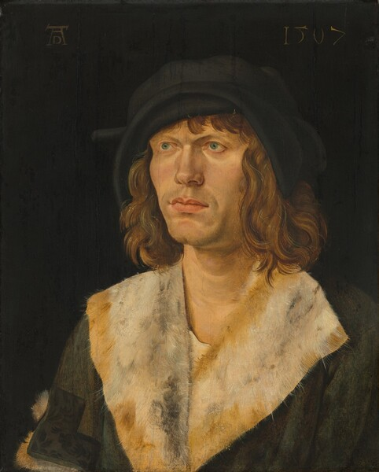
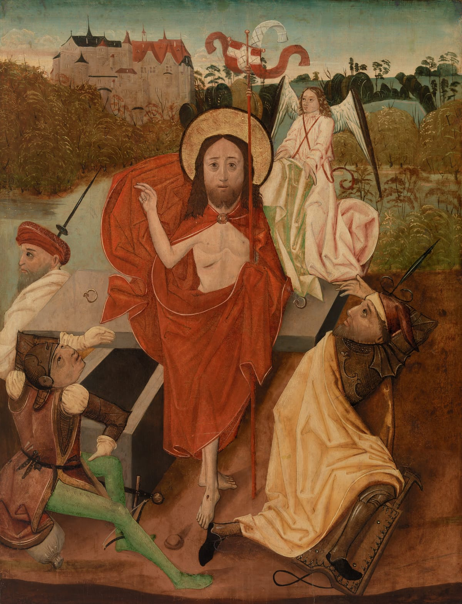

Art
The Northern Europeans were able to perfect Gothic style oil painting. Gothic painting emerged from the spread of Italian painting styles into Northern Europe, which mixed to create a hybrid style of painting. Unlike Italian painters, which painted paintings with the focus of meaning, Northern Europeans painted still pictures, focusing on the state of the subject rather than the meaning behind it.
Northern European humanism was reflected in most paintings, thus, many paintings depicted a Christian life. Instead of focusing on how society impacted a person, Northern European painters in the Renaissance painted how living a christian life would bring someone happiness.
Schäufelein, Hans Leonhard, Portrait of a Mani>.1507.National Gallary of Art,https://www.nga.gov/collection/art-object-page.73.html The Resurrection by a unknown 15th cent. painter